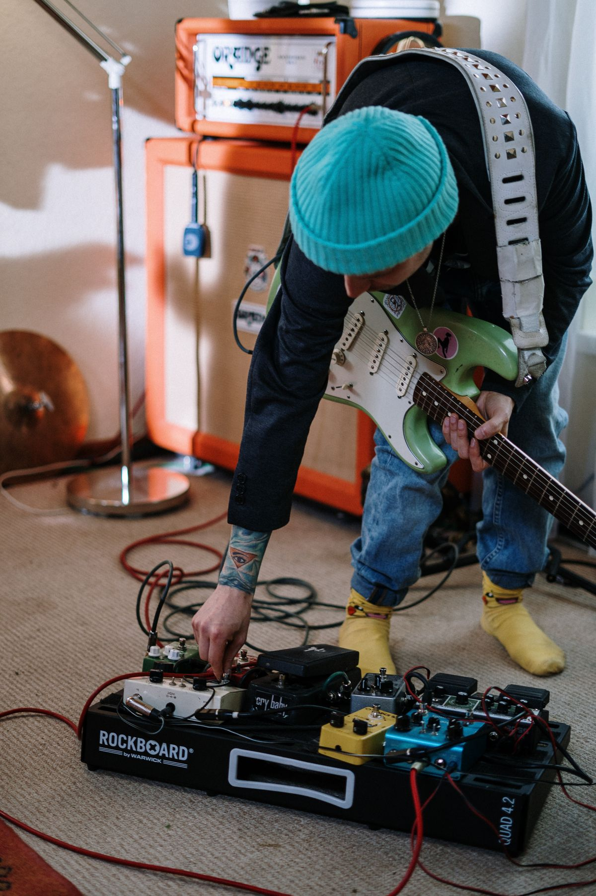

About — the sheet bands actually read
Rider & gear
Jonah Krell is a session and touring lead guitarist based in Leeds, working across heavy music — metal, hardcore and the heavier end of rock. The short version of the story is a borrowed guitar, a music college, and nine years of other people's difficult songs.
He started at thirteen on a borrowed superstrat and the family hi-fi, learned to read music because the school jazz band required it, and took his first dep slot at nineteen — two weeks' notice, for a local thrash band whose set he still has the charts for. The dep work became the specialism: the difficult end of the repertoire. Odd meters, fast alternate picking, songs in tunings nobody else in the band uses, solos that have to land note-for-note because the audience knows them better than the band does.
The working rule has not changed since that first dep: if it isn't written down, it isn't rehearsed. Every engagement starts from charts — his own, made from stems or the record — and the charts, click maps and revoicing notes are part of what a booker receives. That is why the 48-hour calls work: the preparation system is built before the emergency, not during it.
Off the road he tracks remote sessions from a small Leeds studio, writes solo sections to brief, and keeps the practice-room rule that produced the tempo trainer on the Setlist page: slow, subdivided, and honest about the tempo it actually happened at.

Backline — what arrives with him
The rig
- Main guitarSix-string, 25.5″ scale, locking tuners and trem — kept in E standard / Drop D
- Seven-stringB standard / Drop A, for low-register and modern metal work
- Baritone27″ scale in B♭ standard, for slow, low and soundtrack work
- Amplification100W high-gain head with 4×12 cab; silent-stage option via load box and IR loader
- Fly rigFloor modeller with the same patches rebuilt — one flight case, 23 kg, carnet-listed
- PedalboardTuner, noise gate, overdrive, delay, reverb — kept deliberately short
- SparesSecond guitar in the set's main tuning, full string kit, spare valves, leads and straps
Rider — what the booker provides
The ask
- InputsTwo guitar channels (mic'd cab, or DI plus cab sim) and a DI split for reamping
- MonitoringOne wedge or IEM mix carrying click and MD cues
- Soundcheck30 minutes minimum; line check 60 minutes before doors
- Backline, fly dates100W head and 4×12 from the agreed list — no combo substitutions on the day
- Stage3 m × 2 m clear, stage left or right, with a guitar-tech position behind the cab
- PaperworkSetlist, running order and click maps 7 days ahead — 48 hours on a dep call, stems accepted
Terms of engagement
Charts, stems and revisions
Reading & writing
Reads standard notation and Nashville numbers, and sight-reads charts at tempo after one pass. For dep and session work he writes his own charts from stems or the record within 24 hours of receiving them — the charts are included in the fee and copies stay with the band afterwards.
Availability
Touring is booked through March 2027. Studio days and remote tracks are open from January 2027. Dep calls are taken year-round when the diary allows — the honest answer, including “no, but try this player instead”, comes within two working days.
Remote deliverables
Every remote track ships as: DI WAV at 24-bit / 48 kHz, amped stereo stems, and reamp-ready files with the amp settings logged. Any composed solo also arrives as tab and PDF notation, so the part can be played by the band's own guitarist live.
Revisions
Two revision passes are included in the per-track rate. Further passes are billed pro-rata against the session day rate, agreed before the work starts — never discovered on an invoice afterwards.
Next step
Send the setlist
Rates are on the Setlist page and the enquiry form asks for exactly the information a booking decision needs.